/* corinne-vionnet - proofs */
12 plates. Deterministic overlays rendered by the composition-analysis skill.
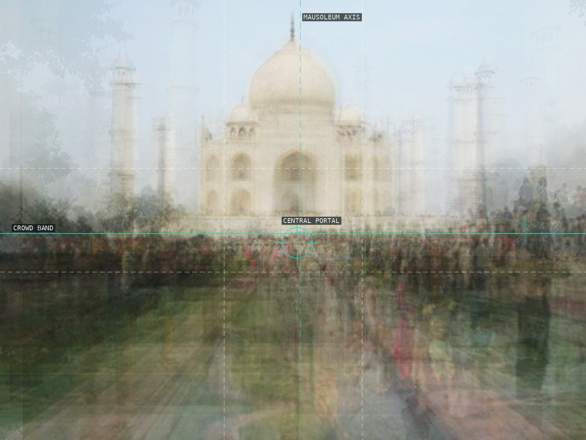
01 — Taj Mahal
Mausoleum axis and crowd band stay legible through collective registration.
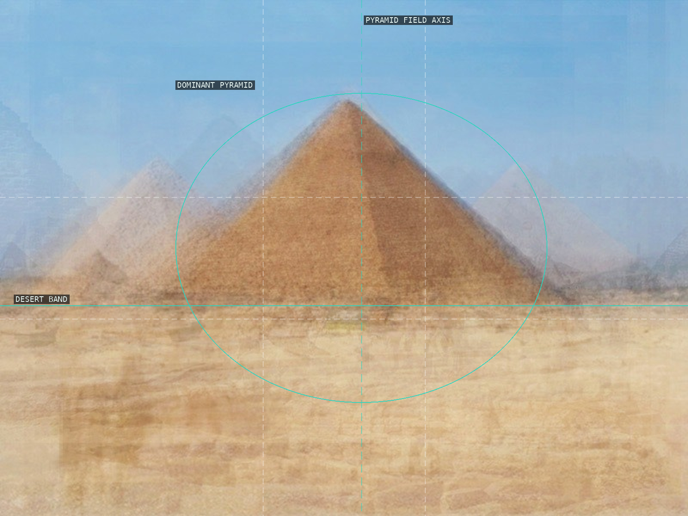
02 — Giza Pyramids
A dominant pyramid organizes repeated frontal approaches.
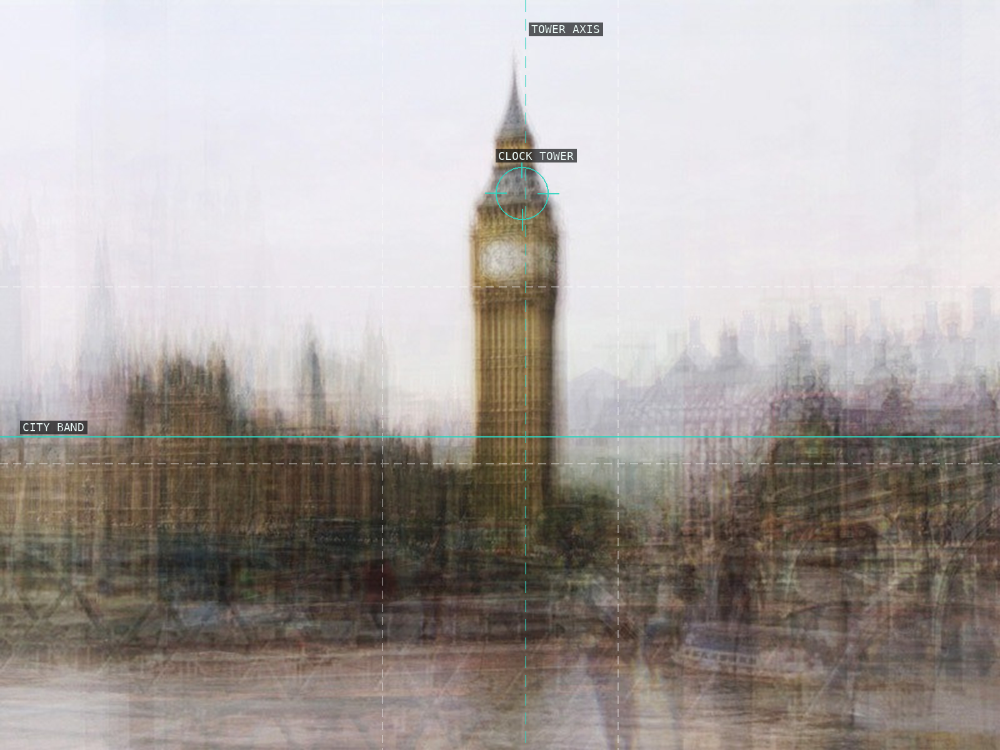
03 — Big Ben / Elizabeth Tower
The clock tower anchors a soft city field.
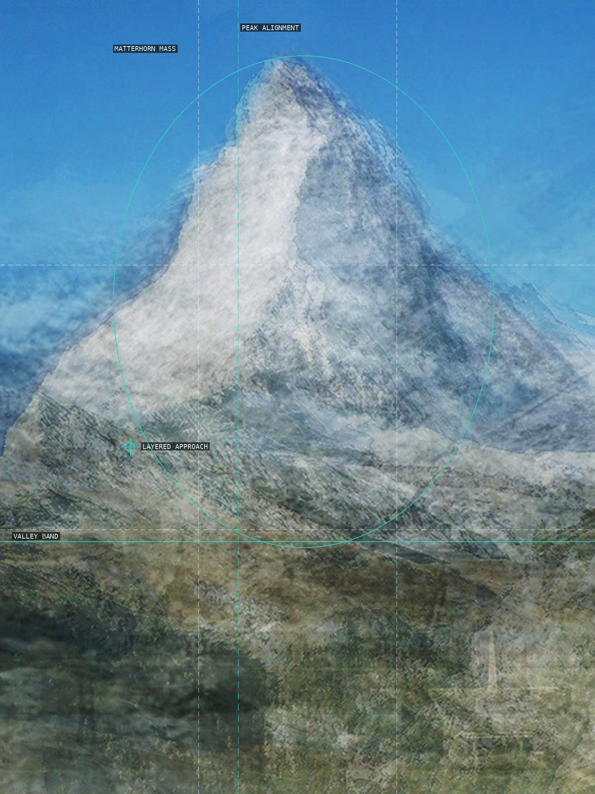
04 — Matterhorn
Peak mass, lower approach, and valley register remain distinct.
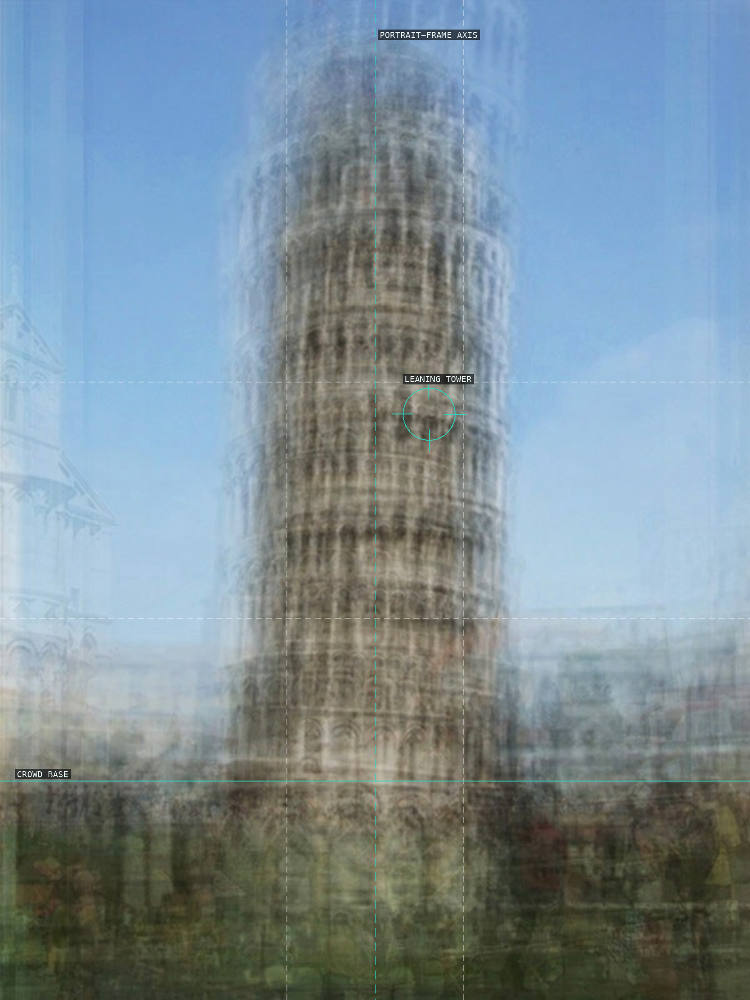
05 — Leaning Tower of Pisa
An upright frame makes the tower's offset silhouette visible.
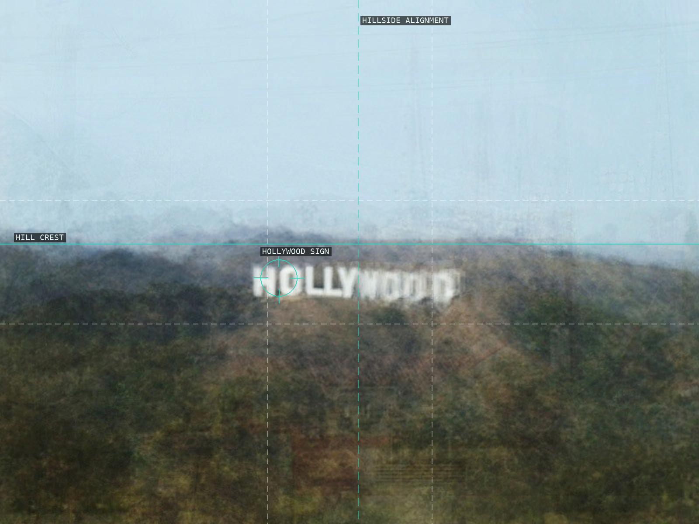
06 — Hollywood Sign
A distant word-mark interrupts a broad hillside.
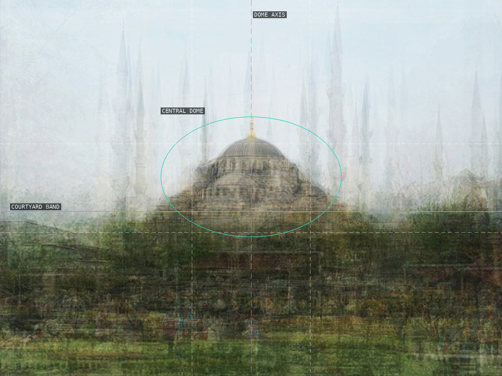
07 — Sultan Ahmed Mosque
One dome holds a vibrating field of minarets.
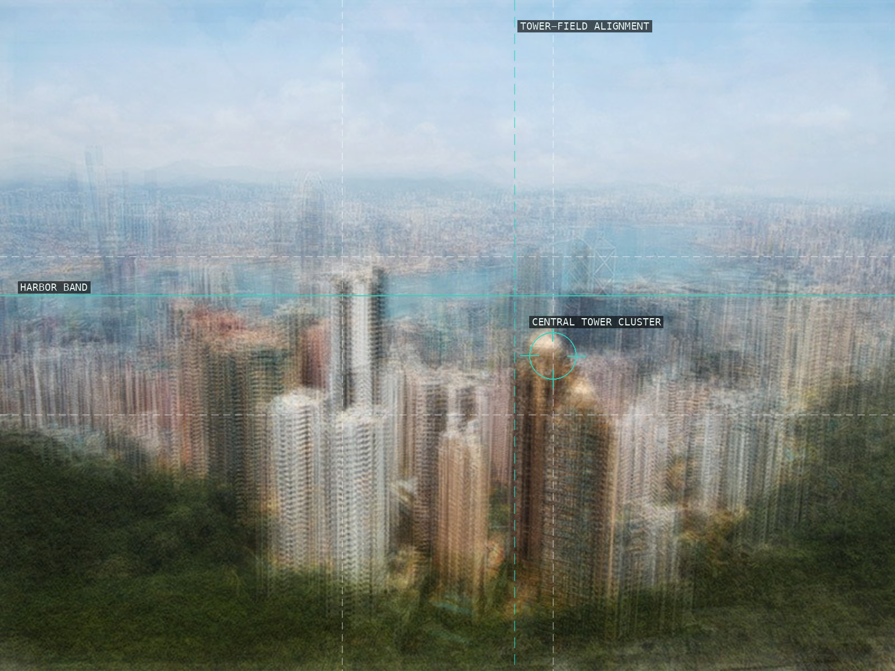
08 — Hong Kong skyline
Harbor, foreground, and towers distribute attention.
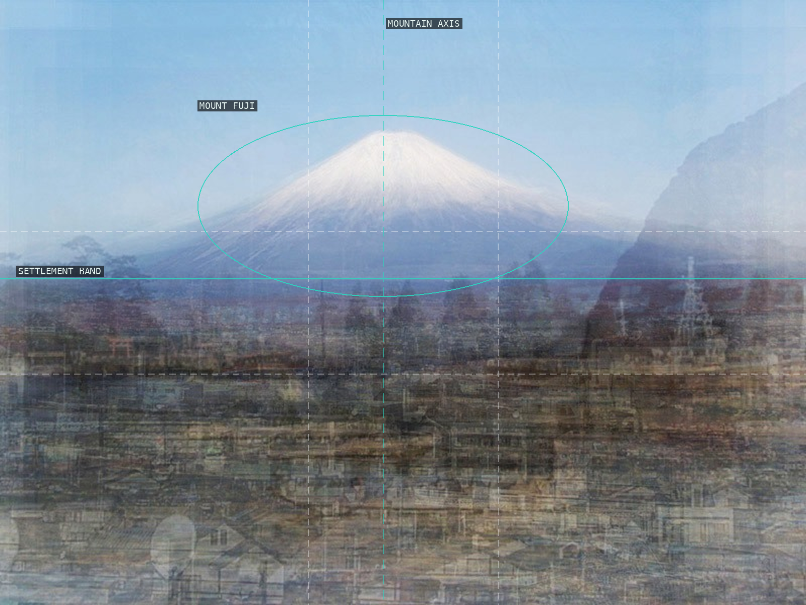
09 — Mount Fuji
A central apex rises from an accumulated settlement.
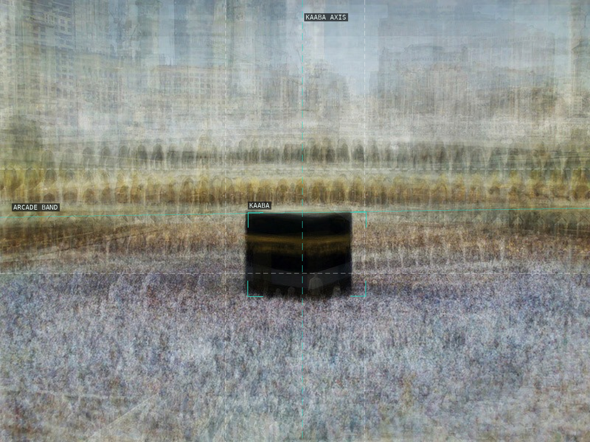
10 — Kaaba
A dark internal frame holds a circulating field.
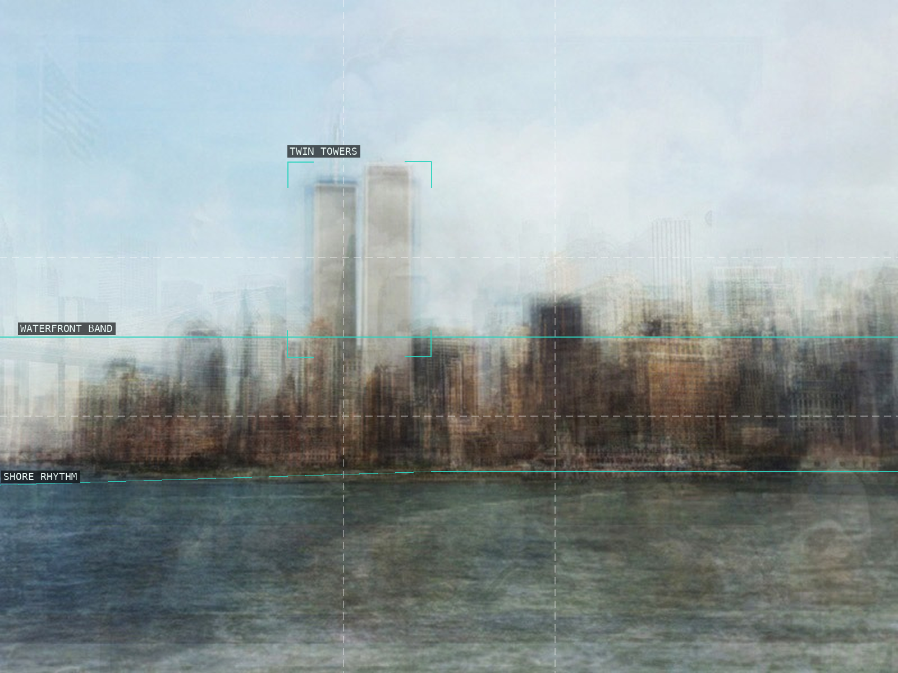
11 — Lower Manhattan / World Trade Center
Twin towers remain answerable to the waterfront.
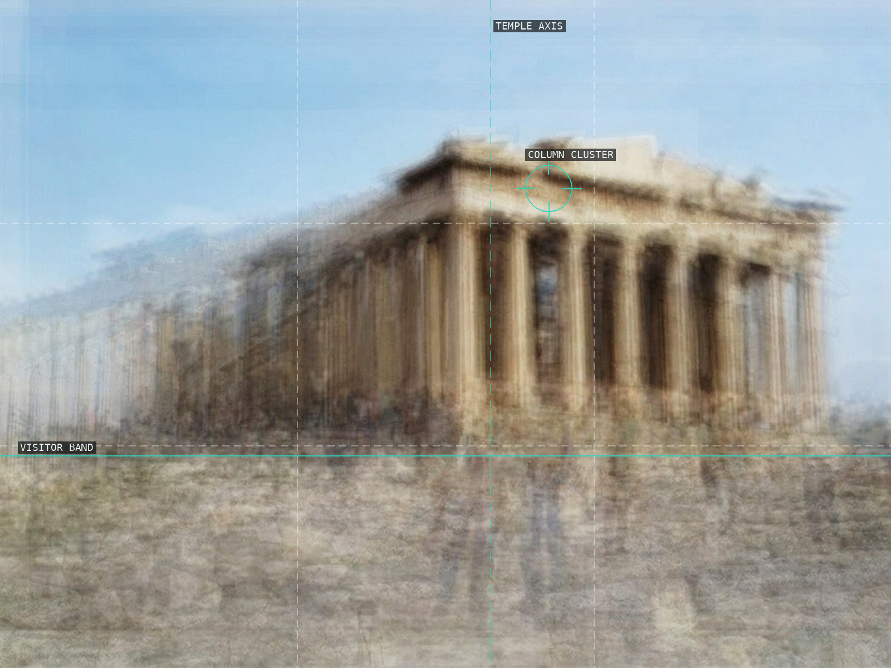
12 — Parthenon
Column rhythm hovers above a visitor band.